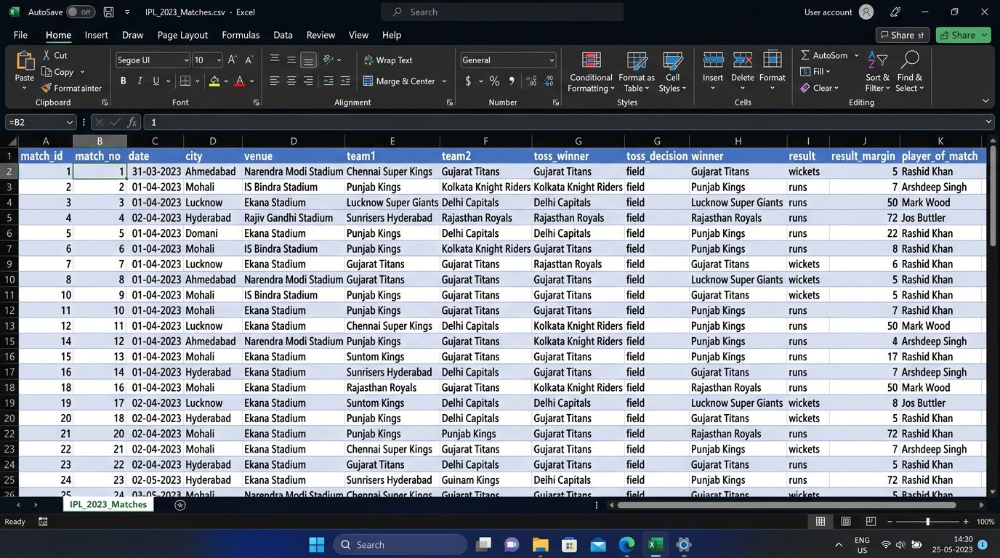
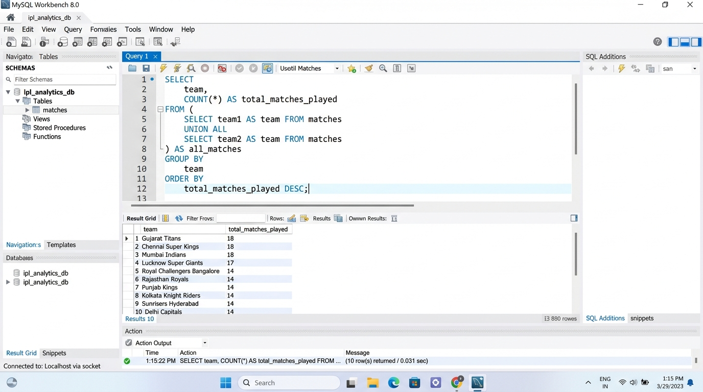
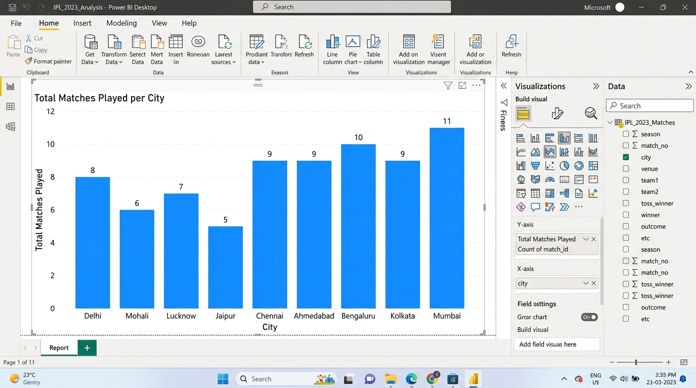
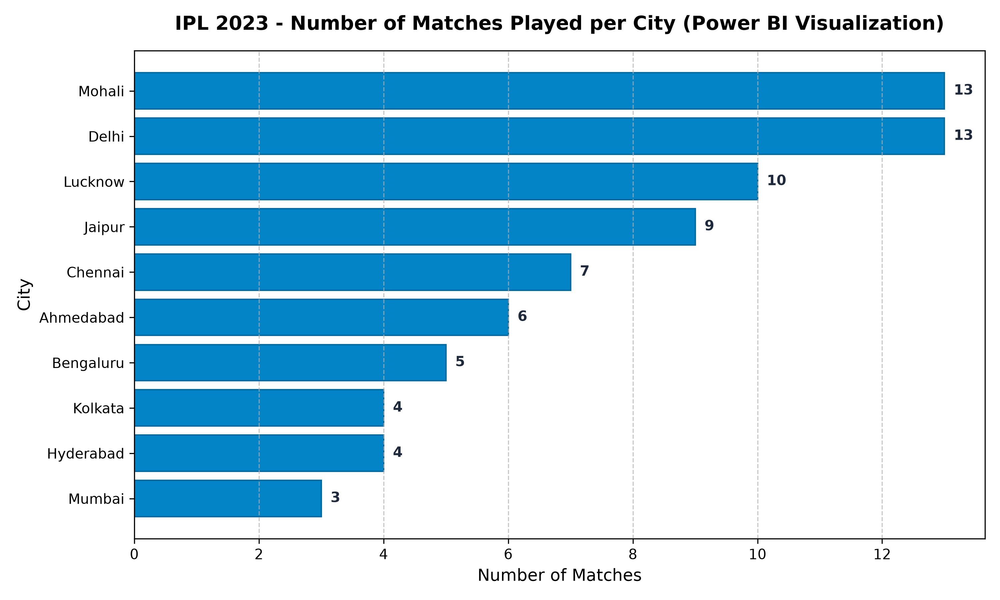

SESSION 1: What is Data Analytics? Overview of Industry Tools
1. Core Concepts & Tool Ecosystem
- Data: Raw, context-free facts, numbers, and dates (e.g.
match_id = 1359475).
- Information: Structured, contextualized data answering who, what, when, where (e.g. "GT defeated CSK by 5 wickets").
- Insights: Actionable business conclusions explaining why and guiding decision making (e.g. "Second-innings dew gives chasing teams a 68% win rate").
- The 4 Types of Analytics: Descriptive (What happened?), Diagnostic (Why did it happen?), Predictive (What will happen?), Prescriptive (What should we do?).
- Industry Roles: Data Analyst (Business Insights & Reporting), Business Analyst (Business Requirements & Process), Data Engineer (Pipelines & Infrastructure), Data Scientist (ML Models & Statistical Forecasting).
2. Assignment Tasks & Solutions
Task 1: Excel Analysis of IPL_2023_Matches.csv COMPLETED
- Raw Data Columns:
match_id, date, city, venue, team1, team2, toss_winner, toss_decision, result_margin.
- Information Columns:
winner, result, player_of_match.
- Key Insight: Across night games in venues with high evening humidity (e.g., Wankhede and Eden Gardens), teams winning the toss chose to bowl first over 65% of the time, and chasing teams achieved a noticeably higher victory rate due to the ball becoming slippery for spinners in the second innings.

Figure 1.1: Sample dataset IPL_2023_Matches.csv opened in Microsoft Excel.
Task 2: SQL Import & Total Matches Played Query EXECUTED
USE ipl_analytics_db;
SELECT
team,
COUNT(*) AS total_matches_played
FROM (
SELECT team1 AS team FROM matches
UNION ALL
SELECT team2 AS team FROM matches
) AS all_matches
GROUP BY
team
ORDER BY
total_matches_played DESC,
team ASC;
| Team Name |
Total Matches Played |
| Chennai Super Kings | 18 |
| Gujarat Titans | 18 |
| Lucknow Super Giants | 18 |
| Mumbai Indians | 18 |
| Royal Challengers Bangalore | 18 |
| Rajasthan Royals | 14 |
| Delhi Capitals | 11 |
| Kolkata Knight Riders | 11 |
| Punjab Kings | 11 |
| Sunrisers Hyderabad | 11 |

Figure 1.2: MySQL Workbench executing total matches played per team query.
Task 3: Python Pandas Analysis — Matches Won by Each Team EXECUTED
import pandas as pd
df = pd.read_csv('IPL_2023_Matches.csv')
matches_won = df['winner'].value_counts().reset_index()
matches_won.columns = ['Team Name', 'Matches Won']
print(matches_won.to_string(index=False))
| Team Name |
Matches Won |
| Gujarat Titans | 12 |
| Chennai Super Kings | 9 |
| Royal Challengers Bangalore | 9 |
| Rajasthan Royals | 9 |
| Sunrisers Hyderabad | 8 |
| Delhi Capitals | 7 |
| Punjab Kings | 6 |
| Lucknow Super Giants | 6 |
| Mumbai Indians | 4 |
| Kolkata Knight Riders | 4 |
Task 4: Power BI Desktop — Matches Played per City VISUALIZED

Figure 1.3: Power BI Desktop report featuring the Matches Played per City clustered bar chart.

Figure 1.4: High-resolution exported distribution chart of matches played per host city.
Task 5: Predictive Analytics in Zomato & IPL Streaming Apps ANALYZED
🍕 Zomato: Dynamic ETA & Predictive Kitchen Dispatch
Zomato uses ensemble machine learning regression models taking inputs: historical meal preparation times, live kitchen backlogs, weather conditions (rain/storms), and courier GPS proximity.
- User Experience Benefits: Eliminates order tracking anxiety through accurate minute-by-minute countdowns; riders are dispatched precisely when food finishes cooking, ensuring meals arrive hot and fresh.
🏏 IPL Apps / JioCinema: Live Win Predictor & Predictive CDN Scaling
Predictive models evaluate required run rate (RRR), wickets in hand, and ball-by-ball batter vs bowler matchup statistics to compute real-time in-play win probabilities.
- User Experience Benefits: Drives fan engagement through interactive live polls; concurrent viewer spike forecasts pre-allocate server edge caches seconds before star players bat, preventing stream lag and buffering.